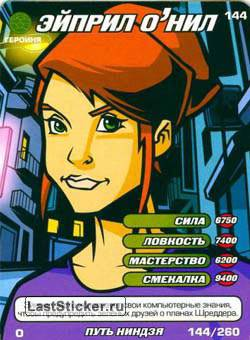

Strength - 6750
Agility - 7400
Skill - 6200
Savvy - 8400

April O'Neil is a young human woman who has appeared in almost every version of the Teenage Mutant Ninja Turtles franchise. April is usually the Ninja Turtles' first human ally in most incarnations, and is generally portrayed as a news reporter and a very good friend of the Ninja Turtles: Leonardo, Raphael, Donatello, and Michelangelo, often acting like a big sister or surrogate mother to them. April's love interest in the franchise is often at Casey Jones, who is also a close friend and human ally of the Turtles.